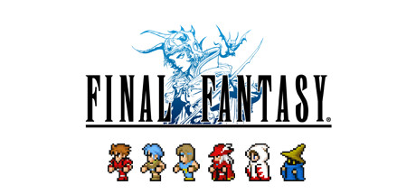

Final Fantasy I
Earth, fire, water, wind... The light that once shone within the four Crystals was lost. Darkness covered the land, until the only hope for humanity rested in legends past. Become the Warriors of Light and embark on your own journey to restore power to the Crystals and save the world.
